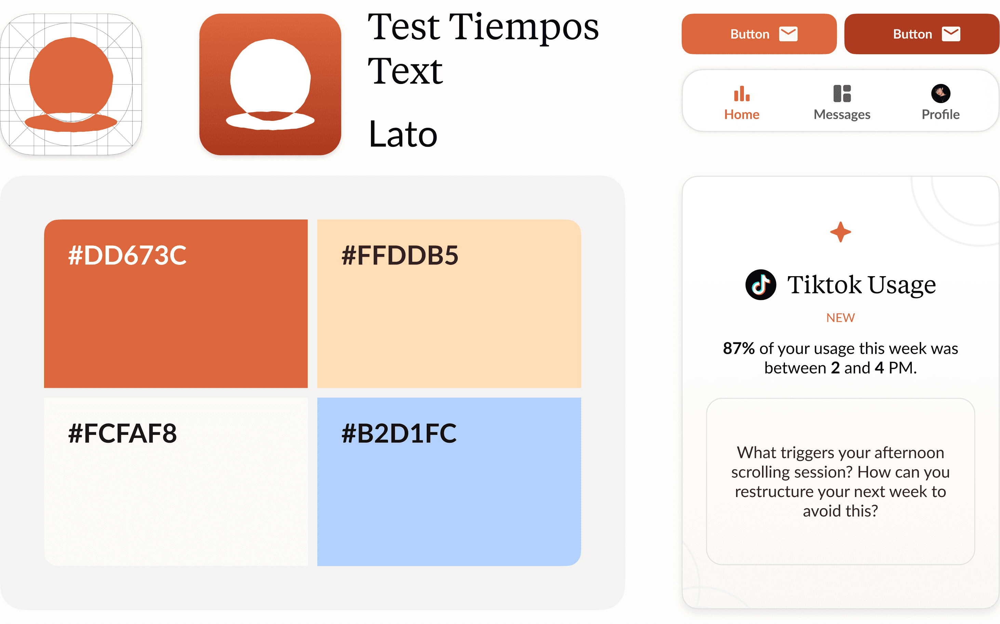

Infusing habit tracking with intentionality
Role
- UX Designer
- User Researcher
Timeline
- Oct 2025 – May 2026
Team
- Me!
- Mina Wang
- Arianna Lee
- Ryan Evans
- Matthew Li
- Kyle Jhong
TL;DR
Time is priceless, yet in a world of digital distractions, our attention is consumed by unintentional clutter. Solas is a mindful solution that tracks and visualizes online habits to intentionally reshape digital behavior and end mindless consumption.
I worked across research, ideation, and design, owning the data visualization and Home view. Solas won Best Design Narrative out of seven teams at the 2026 DFA Expo.
Solution preview
Why do Americans pick up their phones 186 times a day?
Our team conducted 8 interviews and collected over 50 survey responses to learn about screen time habits for the most smartphone-dependent age group of 18–29 year-olds.
Key insight
Addiction, lack of motivation, and personal accountability bar users from reducing their screen time.
Key takeaway
Users want to feel supported and empowered to reach their personal goals.
There was clear concern from our respondents, however the majority felt that their current approach was ineffective and were at a loss on how to start taking steps towards their goals.
We noticed that existing products fell short
Analyzing three existing products within the market, it was apparent that their features were useful, but not in the long run and not for all user groups.

Opal
Displays mindful, motivational messages.
Imposes an all or nothing mindset on users.

ScreenZen
Shows insightful usage messages.
Lacks personalization capabilities.

TimeYourWeb
Passively tracks usage, summarizing insights.
Overloads users with information.
Encouraging mindfulness through reflection
Our research and competitive analysis informed our design values and guiding statement:
- Encouraging to use
- Actionable
- Blameless
How might we encourage young adults to become more mindful and reflective of their technology habits and build a stronger sense of autonomy over their digital lives?
Our goal was to design a product that would require less and less use by the user (which initially seemed counter-intuitive). With a guiding direction, we began brainstorming features and conceptualizing our information architecture.
Designing to empower, not to enforce
Our brainstorming led us to social features like leaderboards or clans with friends. What could go wrong when you're building healthier habits with your friends?
We quickly scratched these ideas because initial feedback revealed that these social features were less appealing to individual users without large social circles and diverted away from our initial mission of cultivating mindfulness through reflection.
- Video and text remindersPersonal pieces of positive reinforcement.
- Weekly insight cardsGentle reminders of areas of improvement.
- Simple, concise data visualizationsOne glance is enough.
- LeaderboardRisk of toxic competitiveness.
- ClansOverwhelmingly social.
With our core features mapped out, we designed a simple, concise information architecture centered around providing users with only the most important information in the clearest way possible.
Home
Digestible data visualizations and insight cards.
Messages
Motivating, personal messages for positive reinforcement.
Profile
Set goals and send personalized messages to friends.
Solas design system
With a logo representing the sun and colors coming from the world around us, our branding draws inspiration from the feeling of being in tune with one's surroundings and finding balance amongst digital distractions.

Solas: Support without the micromanaging
1. Concise goal setting
To keep the experience manageable, we centralized goal setting into a single daily screen time limit, allowing the user to select which apps to limit.
Goal setting user flow
2. Simplified data visualization
To avoid overwhelming users with nuanced data visualizations, we consolidated the data into an hourglass visualization, summarized into a bar chart.
Home view: data visualizations
3. Digestible insights
Focusing on actionable steps, insight cards provide an overview of how users can take steps towards their goal at the start of each week.
Insight card user flow
4. Personalized messages
After users have depleted their allotted time in select apps, Solas displays a personalized message encouraging them to remain on track.
Sending and receiving messages
Reflection
Ambiguity builds character (and your product)
Almost halfway through, we pivoted entirely from our initial ideations and started from square one. It was this choice to reorient that resulted in a more intentional, user-driven final product.
Seek constant feedback, especially informally
Throughout the majority of the project, I was so focused on the final product that I neglected to ask for feedback from my peers. When I finally began to do so, the varied perspectives we received greatly impacted our final result.
Our project, Solas, won Best Design Narrative at the 2026 DFA Expo! Seeing our hard work come to fruition was incredibly rewarding, and I'm grateful to the Design for America chapter at UW for the opportunity to grow as a designer.
Special thanks to my DFA team, BBs!